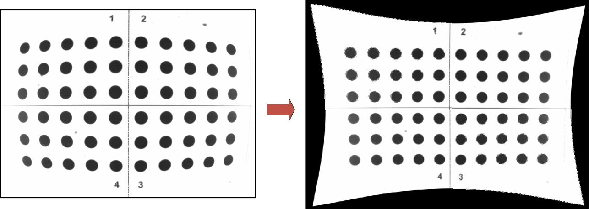
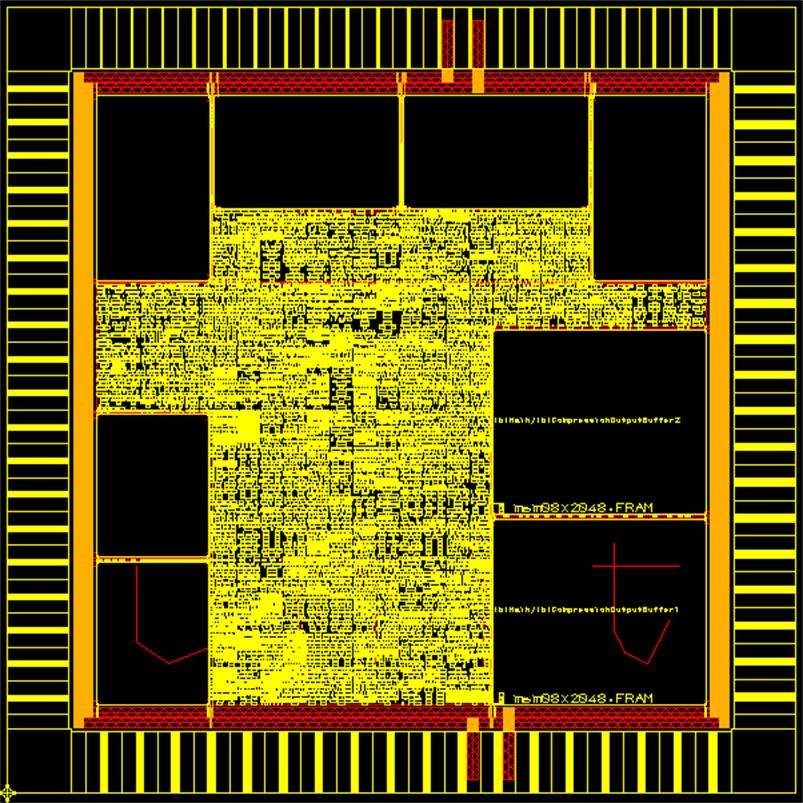
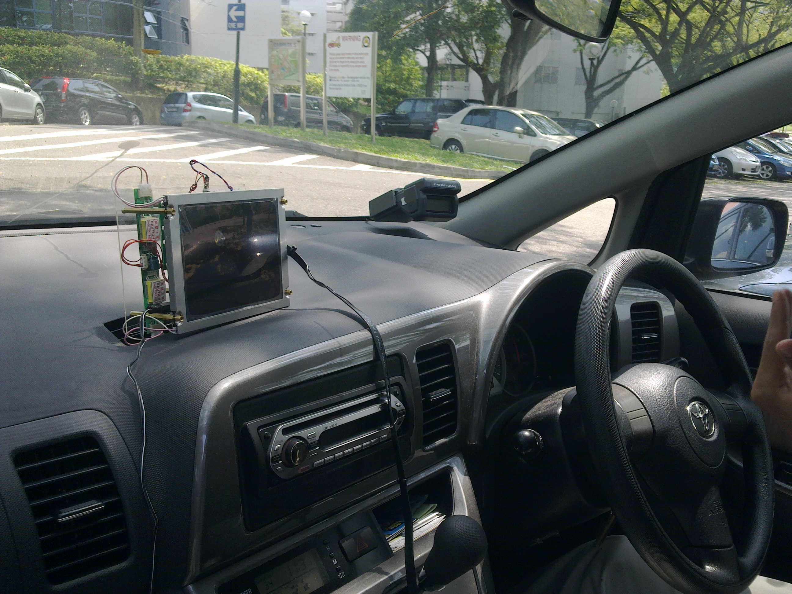

Our Projects


Motivation
Cameras with wide viewing angle lenses (fish-eye lenses) are often used to enhance imaging capability by capturing a large view in a single image. However, these images are subjected to barrel distortion, which introduces non-linear changes in the image that often does not satisfy the qualitative demands of its applications. Although software solutions for spatial distortion correction are available, they do not facilitate low-cost and high-speed solutions that are often required by real-time and robust systems.

Our Solution
A low-cost and power-efficient architecture for real-time barrel distortion correction. The architecture can be used to correct distortion of varying degrees of wide angles by providing the appropriate coefficients to the architecture. A new methodology based on least square estimation to correct non-linear distortions due to images captured with wide angle lenses has been developed. A mathematical model based on polynomial mapping was used to map the images from the distorted image space onto the corrected image space. It has been proven that the correction techniques adopted are independent of the distance of the object from the camera and hence, are suitable for images captured in 3-D plane.
The projected architecture on the 0.35 micron VLSI technology shows that a frame rate of 30fps can be achieved with a chip area is only 5mm^2.

A prototype of the barrel distortion correction architecture for car reversing aid has been developed on the PICO E-12 Field-Programmable Gate Array (FPGA) platform, which consists of a Xilinx Virtex4 device.


Other potential applications include endoscopic imaging, low-cost scanning device, vision-guided robot navigation, and surveillance cameras.